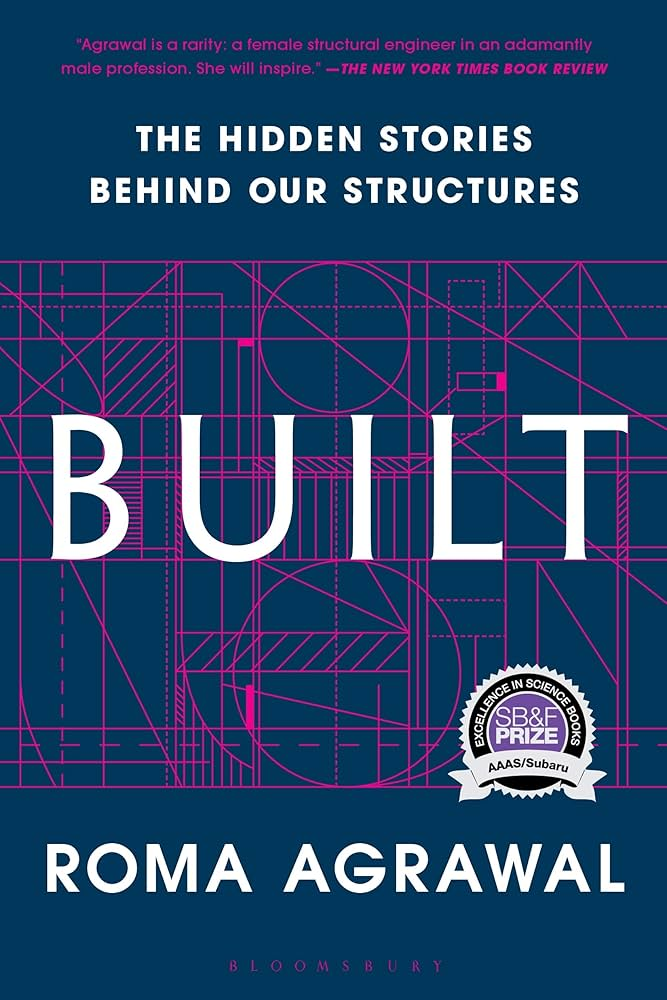

List of Books I have read from 2024 on...
2024
The Poppy War

Author: R.F. Kuang
Pg Count: 544
Pg Count: 544
Engaged in a century's old conflict with the neighboring kingdom, The people of Nikara
must train a new generation of tactical minds to aide in the coming wars. A young girl,
Rin, in her training discovers how far the people of the past and present are willing to
go to save their country.
The Dragon Republic

Author: R.F. Kuang
Pg Count: 672
Pg Count: 672
Distraught from her destruction of a nation, Rin must rally her remaining companions of
the "Cike" to fight again. A civil war breaks out of clashing ideologies among the Nikara
continent. Rin, although weary of being used for her power before, must choose a side in
order to push her beloved country into a better era.
The Burning God

Author: R.F. Kuang
Pg Count: 640
Pg Count: 640
Rage... This and revenge is all that drives our main character now. After betrayal at the
hands of her romantic interest Nheza, Rin rallies the southern warlords in an effort to
form a new empire. Rin has already buried thousands if not millions of bodies. How far is
the southern girl from Tikany willing to go to form a more peaceful land?
Normal People

Author: Sally Rooney
Pg Count: 266
Pg Count: 266
Two teenages from a small town in Ireland become aquainted in there teenage years. Their
lives seem to be intertwined through the most unlikely of curcumstances. As the relationship
between the two develops in there young adult years they learn invaluable life lessons
from each other.
Fourth Wing

Author: Rebecca Yarros
Pg Count: 528
Pg Count: 528
Thrust into the most deadly military college on the continent, Violet must survive her
first year in a training program that sees more than half of its students die each year.
The colleges goal is to produce deadly dragon-riders to defend the Navarre Kingdom. As Violet
struggles to survive, she uncovers a mystery far more deadly to not only herself but the rest
of the world as well.
Atomic Habits

Author: James Clear
Pg Count: 320
Pg Count: 320
This ranks among the top of my psychology/science books. James outlines what it truly means
to have a habit and why improving these habits can catapult our lives into something great.
This book changed the way I see things just like "The Intelligent Investor"and "The Birth
Order Book" did before it. Bravo!!!
Iron Flame

Author: Rebecca Yarros
Pg Count: 623
Pg Count: 623
After realizing the threat on her counties borders is more than just rivaling kingdoms
Violet is compelled to join the revolution. She joins her estranged lover in a revolution
made up of likeminded countrymen, her thought to be dead brother, and dozens of other aristocrats.
So many lies have been uncovered and the dangerous conflict ahead is sure to reveal more.
Assassin's Apprentice
Author: Robin Hobb
Pg Count: 435
Pg Count: 435
A simple yet compelling story of a young boy born illegitimately into a royale family.
Young Fitz is taken under the wing of multiple apprentices, most importantly an assassin.
The bastard son of a prince has magical power in his viens but that does not make the hard
decisions to face in his teenage years any easier.
Royal Assassin

Author: Robin Hobb
Pg Count: 810
Pg Count: 810
After his near death experience in the mountain kingdom Fitz is back with a vengence, this
time with a canine companion. Having grown into adulthood Fitz now takes on more responsibilites
with the royal household. Fitz's rise in station and confidence leads him down a path
to and unforgivable consequences.
The Silk Roads

Author: Peter Frankopan
Pg Count: 504
Pg Count: 504
A book which focuses on the history around the greatest trade route of all time, The Silk
Roads. The covered period ranges from 400BC to around 2012AC. From the domination of the
Persian Empire to the British and American involvment in the Middle East this book has it all!
Turing's Cathedral
Author: George Dyson
Pg Count: 338
Pg Count: 338
Outlining the history of the computer, this book delves deep into the lives of those
responsible for the most influential invention of all time. Although quite slow at times,
I can appreciate the level of detail describing events from the 1700's to present day.
The Hobbit
Author: J.R.R. Tolkien
Pg Count: 330
Pg Count: 330
A simple childrens book about a hobbit and a company of dwarves. 13 dwarves, a hobbit and
a wizard set out to reclaim the ancient dwarven kingdom of Erebor.
2025
Assassin's Quest
Author: Robin Hobb
Pg Count: 757
Pg Count: 757
The end to Fitz's story is one of emotional devastation. In his final act for the Farseer
line, Fitz sets out to bring home Verity in hopes that order can be restored to the Six
Duchies. Fitz's struggle internally of whether he should serve his true king or be with his
true love proves to unravel his life. Fitz and Regal face off in a secret war that may
just undo the pair of them.
Ship of Magic
Author: Robin Hobb
Pg Count: 809
Pg Count: 809
A part of Robin Hobb's Realm of the Elderinglings universe, Ship of Magic is centered around
the far off Kingdom of Jamaillia. The not so far off from the Six Duchies settlement of
Bingtown is where the main characters call home. One Trader family, the Vestrits, have
a pilling amount of debt to pay off for there very expensive liveship. Althea and Wintrow must
navigate there own lives as Vestrits where as the young pirate Kennit seeks his fortune
elsewhere.
Nine Stories
Author: J.D. Salinger
Pg Count: 302
Pg Count: 302
A collection of short stories that take place around 1940. In these odd stories, the author expresses a range of different emotions through his different characters. Death, betrayal, suspense, and love are themes in these stories.
Mad Ship
Author: Robin Hobb
Pg Count: 850
Pg Count: 850
In the second installment of the liveship traders trilogy the traders of Bingtown must face the threat that they feared would come. The Vestrit family's fortune hinges on Altheas ability to reclaim there families ship. Other mysterious forces threaten to bring wrath and ruin to all that inhabit Bingtown.
Onyx Storm

Author: Rebecca Yarros
Pg Count: 528
Pg Count: 528
Now that the venin problem is known all across the continent the two warring nations must come to terms with there situation. Violet must serve as a bridge between the two unwilling allies and also find a way to beat there dark magic counterparts.
Stolen Heir
Author: Holly Black
Pg Count: 352
Pg Count: 352
A very odd story about creatures that cannot tell lies. In this other society, creatures still have a need for deception but are unable to say un-true things. An unlikely band of companions set out to rescue an old general and exact revenge.
Ship of Destiny
Author: Robin Hobb
Pg Count: 789
Pg Count: 789
A brilliant conclusion to all of our characters' seafaring journeys. With the fate of the lands between the Six Duchies and Southern Spice Islands in the balance, the Vesrit family members must operate with extreme care. The fate of humans and other creatures hangs in the balance.
Fool's Errand
Author: Robin Hobb
Pg Count: 662
Pg Count: 662
15 years after the Red Ship Wars, Fitz must leave his isolated life to once again aid the Farseer line. Fitz, the Fool, the wolf, and company attempt to uncover the mystery of Prince Dutifils' disappearance.
Built

Author: Roma Agrawal
Pg Count: 271
Pg Count: 271
Roma describes the basic building blocks for all of civil engineering and specfically how are structures are designed. From the ground up, the process of how our magnificent architecture is built is told via short stories experienced by the author.
Agent 110
Author: Scott Miller
Pg Count: 270
Pg Count: 270
Within the neutral country of Switzerland far away from the devestation in the European WW2 theater, Allen Dulles worked to supply the Allies with valuable intelligence. Accounts from Dulles include contact with the underground German resistance who were responsible for failed attempts on various high ranking german officials.
Golden Fool
Author: Robin Hobb
Pg Count: 709
Pg Count: 709
As Fitz slips back into his old role as Farseer assassin other dark forces pull at him. With delegations from the Out Islands set to arrive for Dutifuls betrothal the shadows that work for the Farseers must remail vigilant of threats both internal and external.
Fool's Fate
Author: Robin Hobb
Pg Count: 909
Pg Count: 909
On the final quest to claim the Narcheskas hand, the prince and co uncover a web of lies that may bring despair to all. The Fools visions will either set the world on a bright path to prosperity or towards endless war.